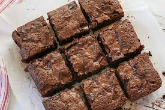

Tip
Aluminum foil can be used to keep food moist, cook it evenly, and make clean-up easier.
NUTRITIONAL FACTS
340 cals
Deep Dish Brownies
Recipe by: Biz McMahon
PREP TIME
60 mins
SERVINGS
9
INGREDIENTS
Directions
Tip
Aluminum foil can be used to keep food moist, cook it evenly, and make clean-up easier.
NUTRITIONAL FACTS
340 cals